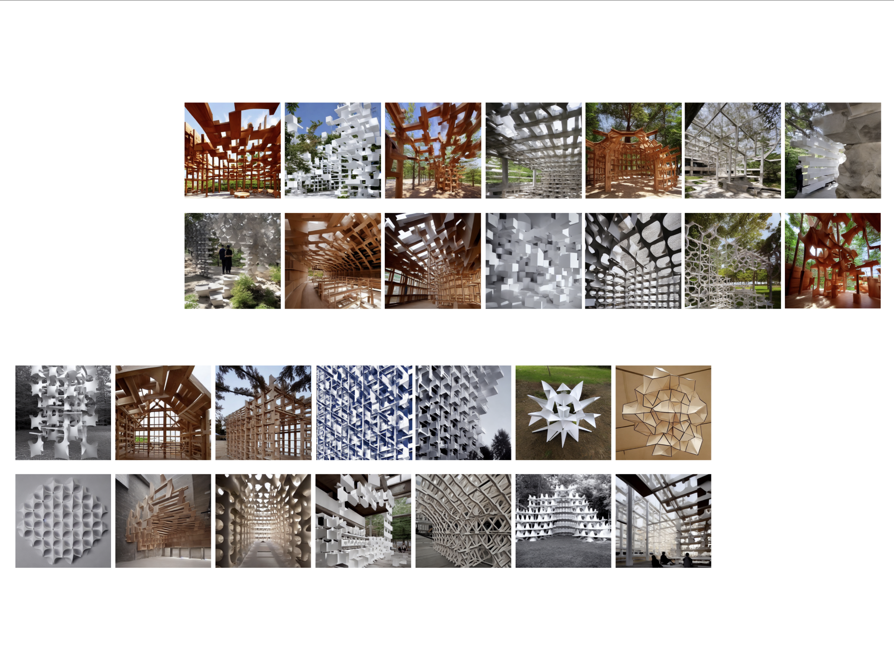
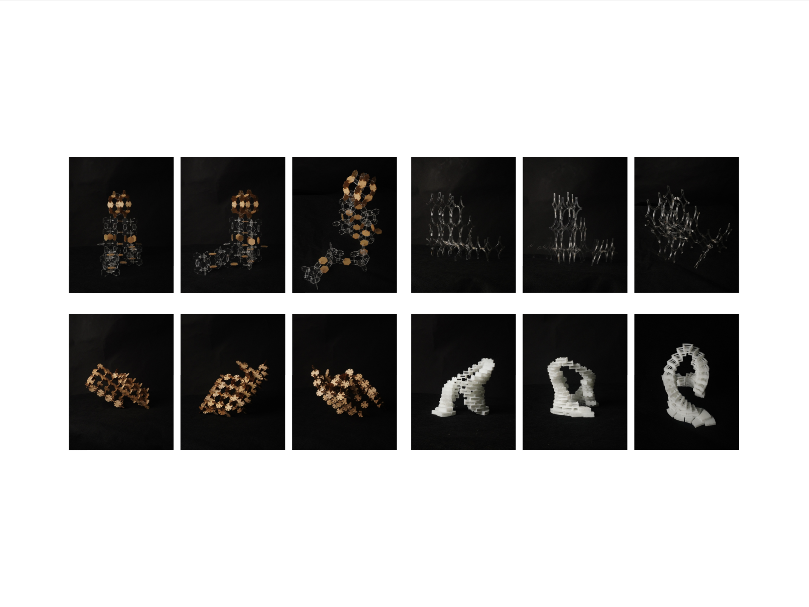
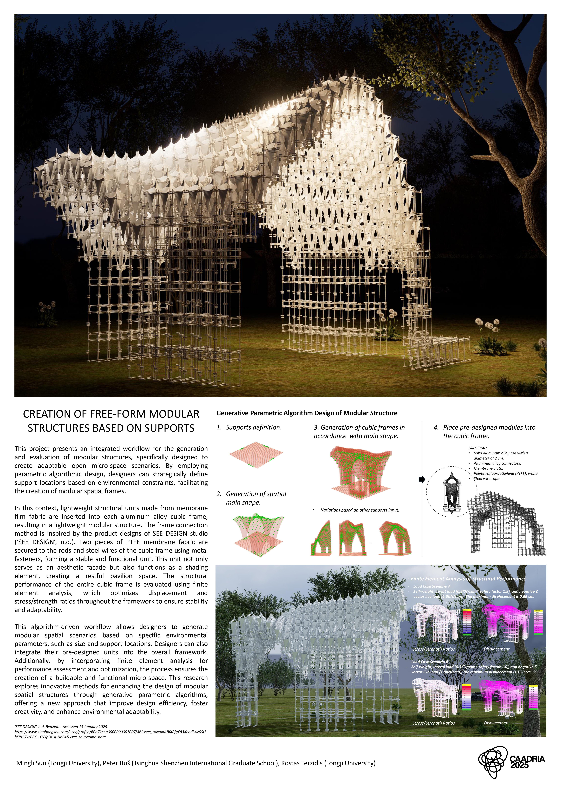
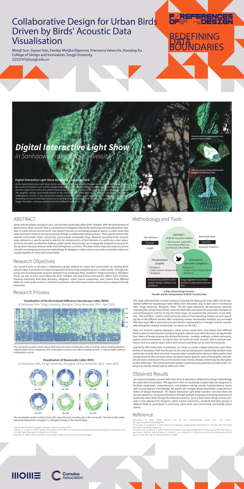
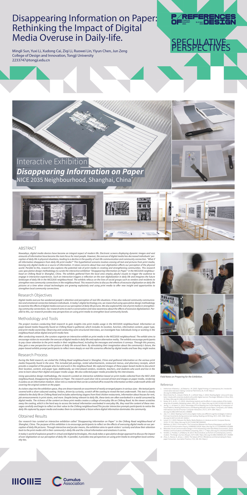

Research
Current research sits at the intersection of algorithm design, neural networks, and structural architecture, with a theoretical focus on human-AI interaction.
|
|
|
Graph-Based Generative Design of Mortise-and-Tenon Joints in Timber Structures
Sun, M., Zhou, Y., Liu, Y., Zhu, Y., Yang, Q., Liu, Y., & Chai, H.
CDRF, 2026
Leveraging GNNs to capture the geometric, topological, and mechanical features of mortise-and-tenon joints, this project transforms the experienced craftsmanship into a digital and intelligent paradigm.
|


|
Text-Guided Fine-Tuned Diffusion Models for Spatial Envisioning of Modular Structures: A Personalized Approach to Conceptual Architectural Design
Sun, M., Chen, J. & Terzidis, K.
CAADRIA, 2025 IASS, 2024
Utilizing the Creativity Support Index (CSI), this study investigates the impact of generative AI-driven conceptual renderings on the early design stage.
|
|
|
An Imitation Learning-Based Agent for Modular Assembly Structural Design
Sun, M., Buš, P., Chen, J., & Sun, K.
CAADRIA, 2024
Developed an agent for a modular assembly-oriented structural design task through imitation learning from human demonstrations, establishing a human–AI collaborative design paradigm.
|
|
|
Intelligent Robotic System for High-Rise Building Façade Finishing
Sun, M. & Chai, H.
Housing Science, 2026 (A Chinese journal article)
Developed an intelligent robotic system integrated with high-rise building construction platforms for façade spraying and grinding operations, improving construction safety and efficiency.
|
Posters
Posters exhibited at academic conferences and exhibitions.
|

|
Co-Intelligent Architecture: Design and Assembly of the Interlocking Spatial Structures
Buš, P., Sun, K., Sun, M. & Chen, J.
ACADIA X CAADRIA 2023: Habits of the Anthropocene
At The University of Hong Kong, Hong Kong SAR, China
|

|
Co-Intelligent Design toward Modular Structures
Sun, M., Chen, J., Sun, K. & Buš, P.
CAADRIA, 2024
At Singapore University of Technology and Design (SUTD), Singapore
|
|

|
Free-Form Modular Structures
Sun, M., Buš, P. & Terzidis, K.
CAADRIA, 2025
At The University of Tokyo, Japan
|
|

|
Collaborative Design Driven by Eco-Acoustic Data Visualisation
Sun, M., Han, S., Elgersma, F., Valsecchi, F. & Xu, X.
CUMULUS, 2024
At Moholy-Nagy University of Art and Design (MOME), Budapest, Hungary
|
|

|
Disappearing Information on Paper: Rethinking the Effects of Digital Media Overuse in Daily Life
Sun, M., Li, Y., Cai, X., Li, Z., Lin, R., Chen, Y. & Zeng, J.
CUMULUS, 2024
At Moholy-Nagy University of Art and Design (MOME), Budapest, Hungary
|
Feel free to steal this website's source code. Do not scrape the HTML from this page itself, as it includes analytics tags that you do not want on your own website — use the github code instead. Also, consider using Leonid Keselman's Jekyll fork of this page.
|
|